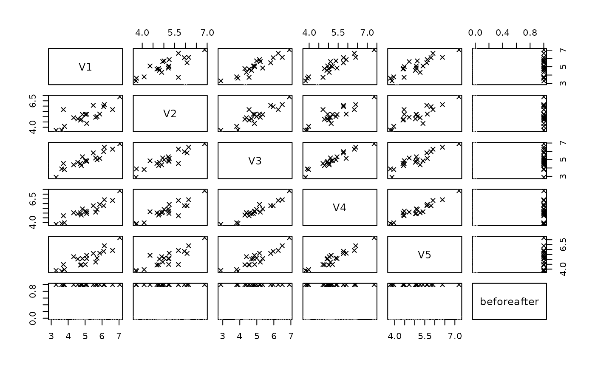
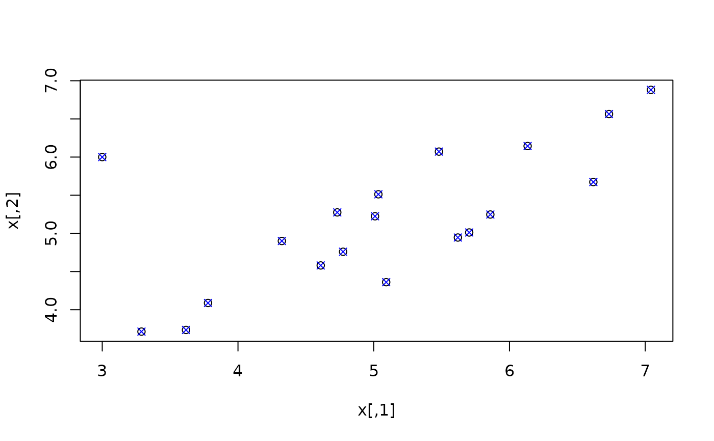
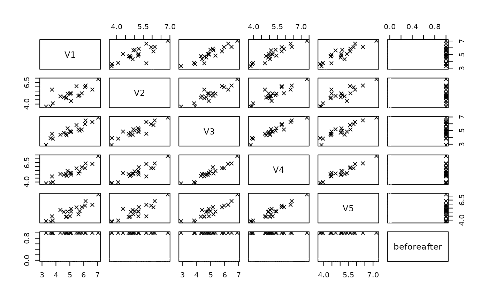
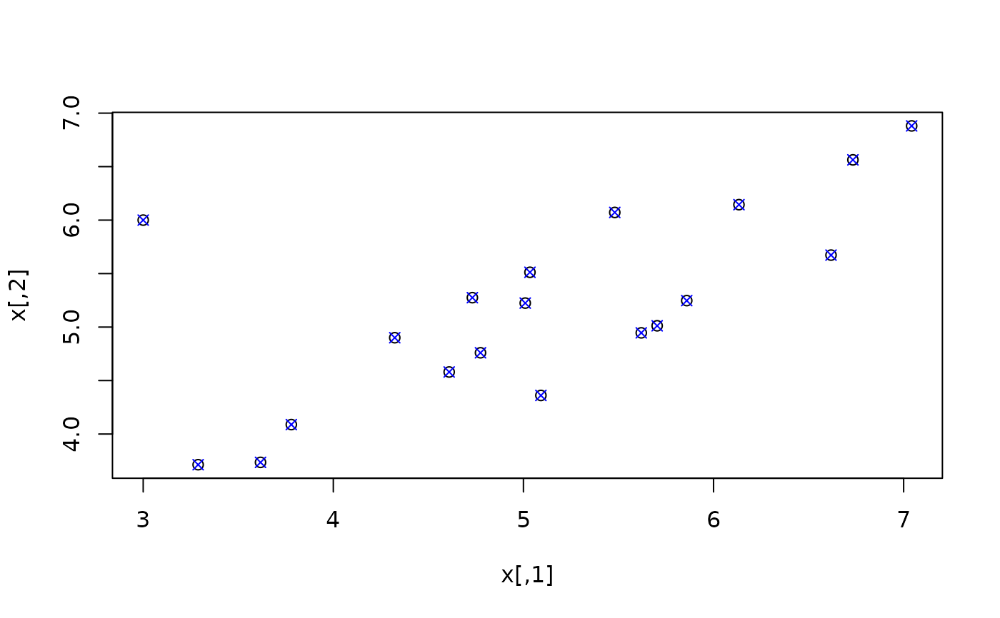

Imputation and detection of outliers
mvTopCoding(x, maha = NULL, center = NULL, cov = NULL, alpha = 0.025)Arguments
- x
an object coercible to a
data.tablecontaining numeric entries- maha
squared mahalanobis distance of each observation
- center
center of data, needed for calculation of mahalanobis distance (if not provided)
- cov
covariance matrix of data, needed for calcualtion of mahalanobis distance (if not provided)
- alpha
significance level, determining the ellipsoide to which outliers should be placed upon
Value
the imputed winsorized data
Details
Winsorizes the potential outliers on the ellipsoid defined by (robust) Mahalanobis distances in direction to the center of the data
Examples
set.seed(123)
x <- MASS::mvrnorm(20, mu = c(5,5), Sigma = matrix(c(1,0.9,0.9,1), ncol = 2))
x[1, 1] <- 3
x[1, 2] <- 6
plot(x)
ximp <- mvTopCoding(x)
points(ximp, col = "blue", pch = 4)
# more dimensions
Sigma <- diag(5)
Sigma[upper.tri(Sigma)] <- 0.9
Sigma[lower.tri(Sigma)] <- 0.9
x <- MASS::mvrnorm(20, mu = rep(5,5), Sigma = Sigma)
x[1, 1] <- 3
x[1, 2] <- 6
pairs(x)
 ximp <- mvTopCoding(x)
xnew <- data.frame(rbind(x, ximp))
xnew$beforeafter <- rep(c(0,1), each = nrow(x))
pairs(xnew, col = xnew$beforeafter, pch = 4)

# by hand (non-robust)
x[2,2] <- NA
m <- colMeans(x, na.rm = TRUE)
s <- cov(x, use = "complete.obs")
md <- stats::mahalanobis(x, m, s)
ximp <- mvTopCoding(x, center = m, cov = s, maha = md)
plot(x)
points(ximp, col = "blue", pch = 4)

ximp <- mvTopCoding(x)
xnew <- data.frame(rbind(x, ximp))
xnew$beforeafter <- rep(c(0,1), each = nrow(x))
pairs(xnew, col = xnew$beforeafter, pch = 4)

# by hand (non-robust)
x[2,2] <- NA
m <- colMeans(x, na.rm = TRUE)
s <- cov(x, use = "complete.obs")
md <- stats::mahalanobis(x, m, s)
ximp <- mvTopCoding(x, center = m, cov = s, maha = md)
plot(x)
points(ximp, col = "blue", pch = 4)
